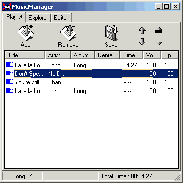

Add - Pressing this button brings out a menu with following 4 options: "Open Files", "Open Folder ", "Add Files", "Add Folder". "Open Files/Folder " replaces current playlist with your selection, and "Add Files/Folder" appends your selection to the current playlist. Note that "Open/Add Folder" is not recursive (it does not go into subdirectories). We may add that feature in the future release.
Remove - Pressing this button brings out a menu with following 3 options: "Remove selected", "Remove all ", "Remove dead links".
Save - Save your playlist.
Up - Move up the selected songs.
Down - Move down the selected songs.
Artist, Title, Album, Genre, Time - Pressing these buttons will sort the playlist by selected category.
* Double Click - Play the selected song.
* Multiple Selection - By utilizing "Ctrl" and "Shift" buttons (or mouse selection), you can now select multiple songs.
 |
Popup Menu This is the menu that pops up when right-clicking on any selection of song(s). You can set/save the volume and speed setting for each song. This extended playlist may come handy, for instance, when compiling a playlist of songs that have uneven volumes or when you want to speed up only the dance songs. |